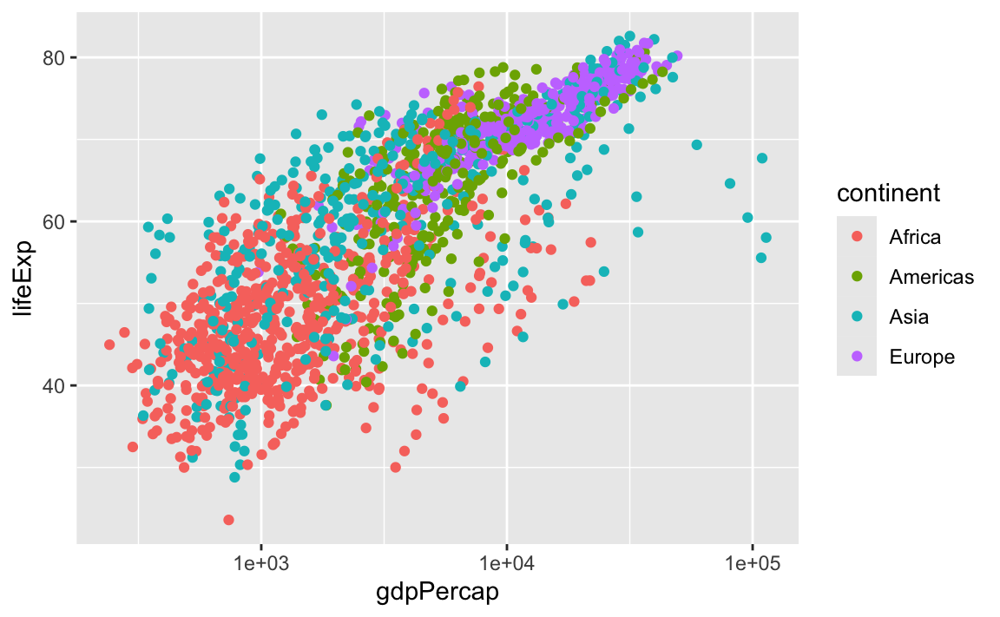
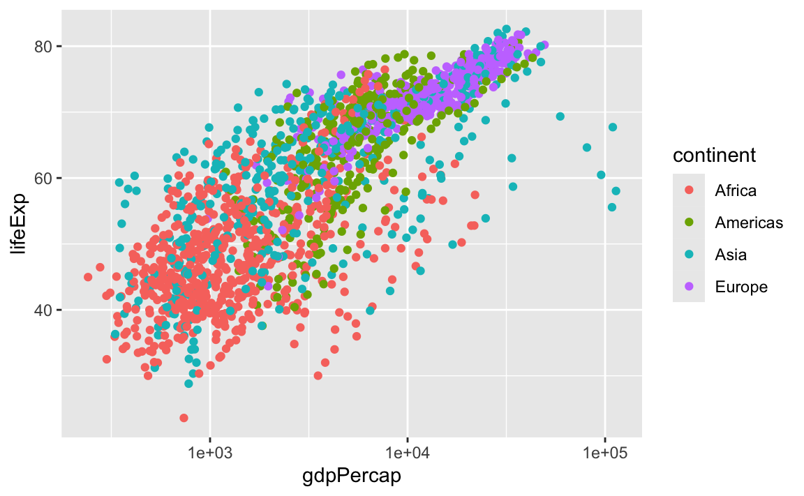

Kapitel 5 Letzte Vorbereitungen …
Jetzt ist es an der Zeit, sich zu vergewissern in welchem Verzeichnis ihr auf eurem Computer ihr euch befindet. Falls ihr ein RStudio Projekt nutzt, sollte diese Frage leicht zu beantworten sein. Falls ihr trotzdem unsicher seid, gebt getwd() in der Konsole ein, um das aktuelle Arbeitsverzeichnis zu sehen.
Alle nachfolgenden Code Beispiele wollen wir in einer .R Datei abspeichern, die dann im aktuellen Arbeitsverzeichnis gespeichert werden soll. Idealerweise geben wir dieser Datei noch einen Namen, wie etwa datenanalyse_teil_1.R, der uns schon viel über den möglichen Inhalt erzählt.
Alternativ können wir alle Befehle natürlich auch in eine R Markdown Datei schreiben, siehe Test drive R Markdown.
Prinzipiell geht es in den folgenden Abschnitten um Datenmanagement. Es werden aber auch immer wieder ein paar Grafiken zu sehen sein. Dies ist aber kein Problem, da ihr ja bereits den Data Visualization Basics Primer.

besucht habt und somit den nötigen Background besitzt.
5.1 Data frames sind fantastisch
Das Standardformat für Daten ist ein data frame. Die meisten Funktionen zur Inferenz, Modellierung und graphischen Darstellung erwarten, dass ihnen über ein data = Argument ein data frame übergeben wird. Dies gilt für Funktion aus der R Basisdistribution schon seit langem.
Die als tidyverse bekannte Kollektion von Paketen geht noch einen Schritt weiter und priorisiert ausdrücklich die Verarbeitung von data frames. Tatsächlich priorisiert tidyverse eine besondere Art von data frames, die als “tibble” bezeichnet wird.
Data frames - im Gegensatz zu allgemeinen Arrays oder speziell Matrizen - können Variablen unterschiedlicher Typen enthalten, wie z.B. Textdaten (Subjekt-ID oder Name), quantitative Daten (Anzahl der weißen Blutkörperchen) und qualitative/kategoriale Informationen (behandelt vs. unbehandelt). Genauer gesagt können in data frames unterschiedliche Spalten aus unterschiedlichen Datentypen bestehen. Innerhalb einer Spalte müssen aber alle Einträge vom gleichen Typ sein.
Daten aus einer Datenanalyse bestehen immer aus mehr als einem Datentyp. Aus diesem Grund eigenen sich Matrizen oder Arrays nicht zur Datenanalyse, da man sonst mit verschiedenen, unverbundenen Objekten (Matrizen, Arrays) arbeiten müsste und diese nur schwer koordinieren kann.
5.2 Gapminder data
Wir werden mit einem Teil der Daten aus dem Gapminder-Projekt
arbeiten. Die Daten sind im gapminder Paket enthalten, welches wir über CRAN installieren können:
install.packages("gapminder")Um die Daten zu verwenden, müssen wir das Paket natürlich auch noch laden
Gapminder wurde von Hans, Anna und Ola Rosling gegründet. Auf der Webseite des Projekts findet man nicht nur viel Informatives, sondern auch sehr Unterhaltsames
Leider ist Hans Rosling bereits 2017 verstorben.
5.3 Die gapminder Daten sind ein “tibble”
Durch das Laden des gapminder Pakets haben wir nun Zugriff auf einen Datenobjekt mit demselben Namen. Schauen wir uns mithilfe der Funktion str() mal die Struktur dieses Objekts an.
str(gapminder)
## tibble [1,704 × 6] (S3: tbl_df/tbl/data.frame)
## $ country : Factor w/ 142 levels "Afghanistan",..: 1 1 1 1 1 1 1 1 1 1 ...
## $ continent: Factor w/ 5 levels "Africa","Americas",..: 3 3 3 3 3 3 3 3 3 3 ...
## $ year : int [1:1704] 1952 1957 1962 1967 1972 1977 1982 1987 1992 1997 ...
## $ lifeExp : num [1:1704] 28.8 30.3 32 34 36.1 ...
## $ pop : int [1:1704] 8425333 9240934 10267083 11537966 13079460 14880372..
## $ gdpPercap: num [1:1704] 779 821 853 836 740 ...str() liefert eine vernünftige Beschreibung von fast allem, und im schlimmsten Fall kann tatsächlich auch nichts “Schlimmes” passieren. Aus dem Output erkennen wir, dass der Datensatz 1704 Beobachtungen enthält.
Auf der anderen Seite hätten wir durch direkten Aufruf von gapminder den Inhalt auch direkt auf den Bildschirm schreiben können. Aber vielleicht habt ihr schon mal einen größeren Datensatz aufgerufen und zögert nun etwas, da große Datensätze tendenziell einfach die Konsole füllen und nur sehr wenig Einblick bieten.
Tidyverse bietet eine spezielle data frame Variante an: ein tibble. gapminder ist ein tibble. Das sieht man auch, wenn man sich die Klasse dieses Objekts anzeigen lässt
class(gapminder)
## [1] "tbl_df" "tbl" "data.frame"Es ist immer noch ein reguläres data frame, aber zusätzlich eben auch ein tibble.
Wenn wir nun gapminder einfach auf den Bildschirm ausgeben, sehen wir, dass die Konsole nicht voll läuft.
gapminder
## # A tibble: 1,704 × 6
## country continent year lifeExp pop gdpPercap
## <fct> <fct> <int> <dbl> <int> <dbl>
## 1 Afghanistan Asia 1952 28.8 8425333 779.
## 2 Afghanistan Asia 1957 30.3 9240934 821.
## 3 Afghanistan Asia 1962 32.0 10267083 853.
## 4 Afghanistan Asia 1967 34.0 11537966 836.
## 5 Afghanistan Asia 1972 36.1 13079460 740.
## 6 Afghanistan Asia 1977 38.4 14880372 786.
## 7 Afghanistan Asia 1982 39.9 12881816 978.
## 8 Afghanistan Asia 1987 40.8 13867957 852.
## 9 Afghanistan Asia 1992 41.7 16317921 649.
## 10 Afghanistan Asia 1997 41.8 22227415 635.
## # ℹ 1,694 more rowsDies ist der erste große Vorteil eines tibbles gegenüber einem data frame.
Wenn ihr mit einem reinen data frame arbeitet - und dieses Feature gefällt euch - so könnt ihr es mit as_tibble() in ein tibble transformieren.
library(tidyverse)
as_tibble(iris)
## # A tibble: 150 × 5
## Sepal.Length Sepal.Width Petal.Length Petal.Width Species
## <dbl> <dbl> <dbl> <dbl> <fct>
## 1 5.1 3.5 1.4 0.2 setosa
## 2 4.9 3 1.4 0.2 setosa
## 3 4.7 3.2 1.3 0.2 setosa
## 4 4.6 3.1 1.5 0.2 setosa
## 5 5 3.6 1.4 0.2 setosa
## 6 5.4 3.9 1.7 0.4 setosa
## 7 4.6 3.4 1.4 0.3 setosa
## 8 5 3.4 1.5 0.2 setosa
## 9 4.4 2.9 1.4 0.2 setosa
## 10 4.9 3.1 1.5 0.1 setosa
## # ℹ 140 more rowsWeitere Möglichkeiten, grundlegende Informationen zu einem data frame abzufragen:
names(gapminder)
## [1] "country" "continent" "year" "lifeExp" "pop" "gdpPercap"
ncol(gapminder)
## [1] 6
length(gapminder)
## [1] 6
dim(gapminder)
## [1] 1704 6
nrow(gapminder)
## [1] 1704Ein bisschen deskriptive Statistik zum Inhalt eines data frames erhält man mit der summary() Funktion:
summary(gapminder)
## country continent year lifeExp
## Afghanistan: 12 Africa :624 Min. :1952 Min. :23.6
## Albania : 12 Americas:300 1st Qu.:1966 1st Qu.:48.2
## Algeria : 12 Asia :396 Median :1980 Median :60.7
## Angola : 12 Europe :360 Mean :1980 Mean :59.5
## Argentina : 12 Oceania : 24 3rd Qu.:1993 3rd Qu.:70.8
## Australia : 12 Max. :2007 Max. :82.6
## (Other) :1632
## pop gdpPercap
## Min. :6.00e+04 Min. : 241
## 1st Qu.:2.79e+06 1st Qu.: 1202
## Median :7.02e+06 Median : 3532
## Mean :2.96e+07 Mean : 7215
## 3rd Qu.:1.96e+07 3rd Qu.: 9325
## Max. :1.32e+09 Max. :113523
## Bemerkung: summary() ist eine generische Funktion. Für eine gegebene Klasse (des Inputs) bestimmt die generische Funktion die passende Methode. Die Funktion summary() besitzt z.B. die folgenden Methoden:
methods(summary)
## [1] summary.aov summary.aovlist*
## [3] summary.aspell* summary.check_packages_in_dir*
## [5] summary.connection summary.data.frame
## [7] summary.Date summary.default
## [9] summary.Duration* summary.ecdf*
## [11] summary.factor summary.ggplot*
## [13] summary.glm summary.hcl_palettes*
## [15] summary.infl* summary.Interval*
## [17] summary.lm summary.loess*
## [19] summary.manova summary.matrix
## [21] summary.mlm* summary.nls*
## [23] summary.packageStatus* summary.Period*
## [25] summary.POSIXct summary.POSIXlt
## [27] summary.ppr* summary.prcomp*
## [29] summary.princomp* summary.proc_time
## [31] summary.rlang_error* summary.rlang_message*
## [33] summary.rlang_trace* summary.rlang_warning*
## [35] summary.rlang:::list_of_conditions* summary.srcfile
## [37] summary.srcref summary.stepfun
## [39] summary.stl* summary.table
## [41] summary.tukeysmooth* summary.vctrs_sclr*
## [43] summary.vctrs_vctr* summary.warnings
## see '?methods' for accessing help and source codeObwohl wir uns formell noch nicht eingehender mit der Visualisierung beschäftigt haben, ist es wichtig ein paar Grafiken zu erzeugen um einen ersten Eindruck über den Datensatz zu bekommen. Auf der anderen Seite werden die Grafiken aber auch nicht (viel) aufwendiger als die Beispiele im Visualisation Basics Primer.
Interessant ist z.B. der zeitliche Verlauf der Lebenserwartung
ggplot(gapminder, mapping = aes(x = year, y = lifeExp)) +
geom_point()oder der Zusammenhang zwischen dem GDP (gross domestic product) und der Lebenserwartung
ggplot(gapminder, mapping = aes(x = gdpPercap, y = lifeExp)) +
geom_point()
ggplot(gapminder, mapping = aes(x = log(gdpPercap), y = lifeExp)) +
geom_point()
Grafiken dieser Art werden wir zu einem späteren Zeitpunkt noch genauer behandeln. Dann sprechen wir natürlich auch intensiv über deren Inhalt.
Wir schauen uns nochmal die Ausgabe von str() an, um darüber zu sprechen, was ein data frame genau ist.
str(gapminder)
## tibble [1,704 × 6] (S3: tbl_df/tbl/data.frame)
## $ country : Factor w/ 142 levels "Afghanistan",..: 1 1 1 1 1 1 1 1 1 1 ...
## $ continent: Factor w/ 5 levels "Africa","Americas",..: 3 3 3 3 3 3 3 3 3 3 ...
## $ year : int [1:1704] 1952 1957 1962 1967 1972 1977 1982 1987 1992 1997 ...
## $ lifeExp : num [1:1704] 28.8 30.3 32 34 36.1 ...
## $ pop : int [1:1704] 8425333 9240934 10267083 11537966 13079460 14880372..
## $ gdpPercap: num [1:1704] 779 821 853 836 740 ...Ein data frame ist ein Sonderfall einer Liste. R verwendet Listen um so gut wie alles in ein Objekt aufnehmen zu können. Data frames sind nun ein Spezialfall einer Liste, bei dem die Länge jedes Listenelements gleich ist.
Nehmen wir mal an, dass wir eine Beschreibung der Variablen
names(gapminder)
## [1] "country" "continent" "year" "lifeExp" "pop" "gdpPercap"zusammen mit den Daten abspeichern wollen. Dazu könnten wir ein tibble
(desc <- tibble(variables = names(gapminder),
desc = c("factor with 142 levels", "factor with 5 levels",
"ranges from 1952 to 2007 in increments of 5 years",
"life expectancy at birth, in years",
"population","GDP per capita (US$, inflation-adjusted)")))
## # A tibble: 6 × 2
## variables desc
## <chr> <chr>
## 1 country factor with 142 levels
## 2 continent factor with 5 levels
## 3 year ranges from 1952 to 2007 in increments of 5 years
## 4 lifeExp life expectancy at birth, in years
## 5 pop population
## 6 gdpPercap GDP per capita (US$, inflation-adjusted)erzeugen, das die Beschreibungen enthält. Dieses data frame hat nun 6 Zeilen und 2 Spalten. Trotzdem können wir es mit gapminder kombinieren, wenn wir beide tibbles in einer Liste abspeichern
gapminder_desc <- list(gapminder, desc)
str(gapminder_desc)
## List of 2
## $ : tibble [1,704 × 6] (S3: tbl_df/tbl/data.frame)
## ..$ country : Factor w/ 142 levels "Afghanistan",..: 1 1 1 1 1 1 1 1 1 1 ...
## ..$ continent: Factor w/ 5 levels "Africa","Americas",..: 3 3 3 3 3 3 3 3 3 ..
## ..$ year : int [1:1704] 1952 1957 1962 1967 1972 1977 1982 1987 1992 199..
## ..$ lifeExp : num [1:1704] 28.8 30.3 32 34 36.1 ...
## ..$ pop : int [1:1704] 8425333 9240934 10267083 11537966 13079460 14880..
## ..$ gdpPercap: num [1:1704] 779 821 853 836 740 ...
## $ : tibble [6 × 2] (S3: tbl_df/tbl/data.frame)
## ..$ variables: chr [1:6] "country" "continent" "year" "lifeExp" ...
## ..$ desc : chr [1:6] "factor with 142 levels" "factor with 5 levels" "r"..5.4 Variablen in einem data frame
Einzelne Variable in einem data frame kann man mit dem Dollarzeichen $ ansprechen. Als Beispiel schauen wir uns die numerische Variable lifeExp genauer an.
head(gapminder$lifeExp)
## [1] 28.8 30.3 32.0 34.0 36.1 38.4
summary(gapminder$lifeExp)
## Min. 1st Qu. Median Mean 3rd Qu. Max.
## 23.6 48.2 60.7 59.5 70.8 82.6Die summary() Funktion berechnet, neben dem empirischen Mittel, das Five-number summary, bestehend aus
dem Minimum
dem unteren Quartil (das empirische 0.25 Quantil)
dem Median
dem oberen Quartil (das empirische 0.75 Quantil)
dem Maximum
Zusätzlich wollen wir noch die Verteilung von lifeExp visualisieren und plotten dazu ein Histogramm. Dazu verwenden wir wieder ggplot().
Beachtet, dass ihr innerhalb der ggplot2 Funktionen Variablen eines data frames direkt ansprechen könnt. Es ist hier also nicht nötig mit dem $ Operator zu arbeiten.
ggplot(gapminder, mapping = aes(x = lifeExp)) +
geom_histogram()
## `stat_bin()` using `bins = 30`. Pick better value with `binwidth`.
Alternativ können wir die Einträge eines data frames aber auch über die eckigen Klammern [] indizieren.
summary(gapminder[,"lifeExp"])
## lifeExp
## Min. :23.6
## 1st Qu.:48.2
## Median :60.7
## Mean :59.5
## 3rd Qu.:70.8
## Max. :82.6Dabei spezifiziert der Eintrag links vom Komma die Zeilen und der Wert rechts davon die Spalten. Dies ist hilfreich, wenn man auf einzelne Werte zugreifen will. Aber beim Aufruf nur einer Variable (Spalte), ist die $ Notation sicherlich vorteilhafter.
Die Variable year ist eine ganzzahlige Variable, aber da es so wenige unterschiedliche Werte gibt, funktioniert sie auch ein wenig wie eine kategoriale Variable und es macht Sinn die Häufigkeit der einzelnen Ausprägungen zu zählen.
summary(gapminder$year)
## Min. 1st Qu. Median Mean 3rd Qu. Max.
## 1952 1966 1980 1980 1993 2007
table(gapminder$year)
##
## 1952 1957 1962 1967 1972 1977 1982 1987 1992 1997 2002 2007
## 142 142 142 142 142 142 142 142 142 142 142 142Wir erkennen, dass in jedem Jahr die gleiche Anzahl an Beobachtungen vorhanden ist. Es handelt sich dabei stets um Beobachtungen aus den gleichen 142 Ländern. Dies erkennt man aus dieser Ausgabe aber natürlich noch nicht.
Die Variablen country und continent enthalten rein kategorische Informationen, die in R (häufig) als factor gespeichert werden.
class(gapminder$continent)
## [1] "factor"
summary(gapminder$continent)
## Africa Americas Asia Europe Oceania
## 624 300 396 360 24
levels(gapminder$continent)
## [1] "Africa" "Americas" "Asia" "Europe" "Oceania"
nlevels(gapminder$continent)
## [1] 5Die Levels von continent sind "Afrika", "America" usw., also Beschreibungen, die man gut lesen und verstehen kann. So sollte es sein, wenn man in R eine Faktorvariable aufruft. Im Allgemeinen sind die Levels von Menschen lesbare Zeichenfolgen, wie "male/female" oder "control/treated".
Euch sollte aber auch klar sein, dass R diese Information in kodierter Form speichert. Als Beispiel könnt ihr euch das Ergebnis von str(gapminder$continent) anschauen
str(gapminder$continent)
## Factor w/ 5 levels "Africa","Americas",..: 3 3 3 3 3 3 3 3 3 3 ...Faktorvariablen haben Vor- und Nachteil. Im weiteren Verlauf zeigen wir sowohl die Vor- wie auch die Nachteile. Generell ist aber durchaus so, dass die Vorteile überwiegen.
Als Nächstes erstellen wir mit der Funktion table() eine Häufigkeitstabelle für die Variable count. Die berechneten Werte wollen wir anschließend noch mithilfe der Funktion geom_bar() visualisieren. Die zu plottenden Häufigkeiten müssen dabei aber nicht an die Funktion geom_bar() übergeben werden. Die Funktion berechnet selbst (über die statistische Transformation stat_count()) die entsprechenden Werte.
table(gapminder$continent)
##
## Africa Americas Asia Europe Oceania
## 624 300 396 360 24
ggplot(gapminder, aes(x = continent)) + geom_bar()
In den folgenden Abbildungen sehen wir, wie die kodierten Zahlenwerte einer Faktor Variable genutzt werden können. Der continent-Faktor lässt sich im ggplot2-Paket leicht in “Facetten” oder Farben abbilden.
Die Erstellung von Grafiken mit ggplot2 werden wir noch genauer besprechen. Daher könnt ihr euch also ruhig zurücklehnen und die Plots einfach genießen oder blind kopieren/einfügen.
Zunächst initialisieren wir eine Grafik ohne Inhalt, da nicht gesagt wird, wie die Daten geplottet werden sollen.
p <- ggplot(filter(gapminder,
continent != "Oceania"), # Daten aus Oceania werden "herausgefiltert"
aes(x = gdpPercap, y = lifeExp)) Für die x-Achse wählen wir im nächsten Schritt eine log Skala (zur Basis 10).
p <- p + scale_x_log10() Zum Grafikobjekt p werden nun weitere Komponenten hinzugefügt und dann jeweils geplottet
# einen scatterplot
p + geom_point()
# mit verschiedenen farben für die verschiedenen kontinente
p + geom_point(aes(color = continent))
# punkte mit transparenz
p + geom_point(alpha = (1/3), size = 3) +
geom_smooth(lwd = 3, se = FALSE) # einen geglätteten zusammenhang
## `geom_smooth()` using method = 'gam' and formula = 'y ~ s(x, bs = "cs")'
# für jeden kontinent einen eigenen plot (innerhalb einer grafik) erzeugen
p + geom_point(alpha = (1/3), size = 3) +
facet_wrap(~ continent) +
geom_smooth(lwd = 1.5, se = FALSE)
## `geom_smooth()` using method = 'loess' and formula = 'y ~ x' 

5.5 Aufgabe
Im nächsten Abschnitt starten wir mit dem dplyr Paket. Bearbeitet daher zur Vorbereitung die ersten beiden Abschnitte des Work with Data
Working with Tibbbles zeigt die Verwendung von Tibbles sowie die Verwaltung von tidyverse-Paketen.
learnr::run_tutorial("tibbles", package = "idsst.rtutorials")Isolating Data with dplyr zeigt wie ihr Variablen auswählt, Beobachtungen filtert und Werte neu anordnet. Zudem wird der Pipe-Operator von R, |>, eingeführt.
learnr::run_tutorial("isolating", package = "idsst.rtutorials")